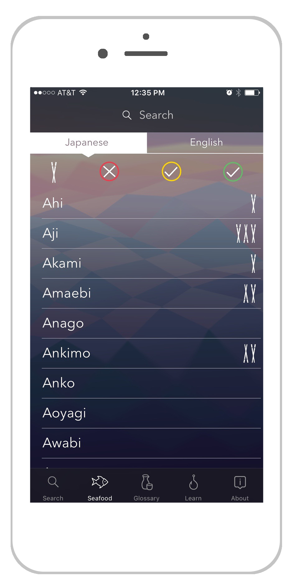
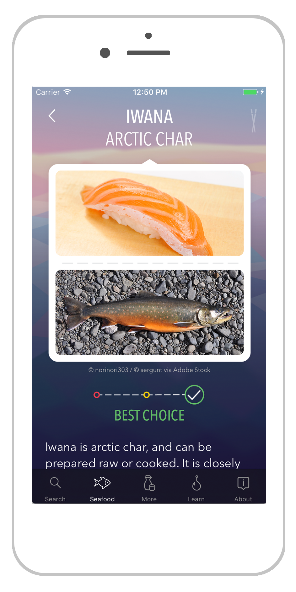

Sustainable Sushi Guide is your seafood and sushi dining companion. You might recognize maguro or hamachi on a menu, but what about tako, iwashi, or shirako? What are they? Are they served raw or cooked? Are they sustainably harvested? Sustainable Sushi Guide is here to rescue you.
- Search over 60 types of seafood by Japanese or English name
- Read sustainability information distilled from many seafood guides
- View photos of typical preparations
- Translate over 50 other terms you might see on a sushi menu (e.g. nigiri, chirashi, omakase)
- Learn about sustainable fishing and farming methods
- Rate sushi you’ve tried for future reference
No Internet connection needed. No ads. No in-app purchases.



Press Kit
Download high-res app icon here.
{kind=link}
Download high-res screenshots here.
Sustainable Sushi Guide was originally developed as a final project for SEA Semester: Historic Seaports of Western Europe in summer 2016.
All code, art, and research for the app was done by Kate Salesin, a recent graduate of Cornell University.